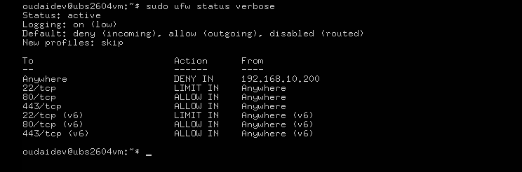

Every service listening on a network interface is an invitation. Leaving a cloud endpoint or a development environment exposed without a localised packet filter is the single most common cause of compromise in infrastructure deployments — not because the applications are flawed, but because nothing stands between the network and the process.
This engagement establishes a hardened host boundary using UFW, the standard iptables/nftables frontend shipped with Ubuntu. The goal is not merely to close ports but to engineer a stateful perimeter — a policy engine that understands connection context, enforces least privilege by default, and can isolate a specific hostile node in real time without touching the rest of the ruleset.
All rule engineering was performed inside a lab VM. The blacklisted threat node
(192.168.10.200) is a simulated adversary — a second lab machine used to
verify that the DENY rule actually severs traffic as expected.
Default Deny Perimeter Construction
A firewall's default policy is the single most important decision in the entire
configuration — it's the stance the engine takes for every packet that doesn't match an
explicit rule. The wrong choice here undermines every rule that follows. UFW ships with
deny incoming already set, but the baseline is only meaningful once it's
declared explicitly and paired with a matching outbound policy:
sudo ufw default deny incoming
sudo ufw default allow outgoingThe asymmetry is deliberate and central to the entire design. Inbound traffic is denied by default — no unrequested packet may cross the kernel boundary, and no service is reachable unless a rule explicitly permits it. Outbound traffic is allowed freely — the host must still be able to reach package repositories, DNS resolvers, and upstream APIs for normal operation. This is the network-layer expression of the principle of least privilege: deny by default, permit by exception.
The engine now enforces a strict Default Deny topology for inbound connections while permitting free outbound paths. Every subsequent rule in this engagement is an explicit exception carved out of an otherwise closed perimeter — which means the attack surface is now bounded by what has been opened, not by what has been forgotten to close.
Technical Rule Engineering & Threat Blacklisting
With the perimeter closed, specific communication corridors were opened to accommodate production data flows and to protect administrative interfaces from automated threat vectors. Three distinct rule classes were deployed:
# Rate-limit SSH: 6 handshakes per 30s per source, excess dropped
sudo ufw limit 22/tcp
# Provision production web corridors (HTTP / HTTPS)
sudo ufw allow 80/tcp
sudo ufw allow 443/tcp
# Incident response: blacklist a flagged hostile node
sudo ufw deny from 192.168.10.200SSH connection rate-limiting
Port 22 was not opened with a standard allow — it was opened with
limit. The distinction matters. UFW's limit directive installs a
stateful rule that watches the connection rate per source address: if a single
external node initiates more than six handshakes within a thirty-second window, the kernel
silently drops all further traffic from that source. Not closed, not rejected —
silently dropped, meaning an automated brute-force tool receives no response at
all and cannot even distinguish "port closed" from "host unreachable."
That difference is what makes rate-limiting more effective than a simple connection cap. A rejected connection tells the attacker "slow down." A silently dropped connection tells them nothing — and a script that can't observe its own impact can't adapt to it.
Production service allocation
Ports 80 and 443 were provisioned as explicitly cleared corridors for standard unencrypted and encrypted web application payloads. These are the only two inbound paths in the entire ruleset that accept arbitrary external traffic — every other port remains behind the Default Deny stance established in Phase 1.
Targeted IP blacklisting
A real-world incident response containment task was simulated by injecting a top-priority
drop rule that explicitly targets a flagged threat node
(192.168.10.200). This rule sits above the Default Deny policy as a named
exception — the blacklisted host is severed from every service on the machine, unable to
run host enumeration passes or touch any system port.
In a live incident response scenario, the value of a targeted DENY rule is not that it blocks a hostile host — the Default Deny policy already does that for any port not explicitly opened. The value is documentation and decisiveness: the blacklist entry records the specific hostile actor, establishes an audit trail, and ensures the host stays blocked even if a later rule opens an inbound corridor for legitimate use.
Policy Enforcement Validation
The stateful packet filter was armed via the master enable command, then audited via a verbose status pass that surfaces every rule, the default policies, and the active logging state in a single view:
sudo ufw enable
sudo ufw status verboseThe diagnostic returned full operational readiness across every dimension:
- Status: active. The firewall engine is loaded and enforcing policy at the kernel packet-filtering layer, not merely configured on disk.
-
Default policies confirmed. The
deny (incoming)andallow (outgoing)baseline is holding firm — nothing has silently overwritten the Default Deny stance. -
Rule matrix rendered. The status table shows the three rule classes in
effect:
LIMIT INfor port 22,ALLOW INfor ports 80 and 443, andDENY INfor the blacklisted threat node. - Dual-stack automation. The engine successfully initialised identical security parameters for both IPv4 and IPv6 infrastructure layers simultaneously. This matters because a firewall configured only for IPv4 leaves a silent second attack surface on v6 — the ruleset must protect both stacks or the deployment is only half-hardened.
Host-level boundary defense confirmed. The server is insulated from network scanning noise, protected against dictionary attacks at the connection layer, and equipped to discard targeted adversary packets with zero administrative latency. The perimeter now behaves as a control, not a configuration file.

active UFW state, showing the default incoming deny framework alongside
explicit port restrictions, rate limits, and node block parameters.
Security & Data Privacy Note
Visual telemetry was monitored via local snapshot archive. To maintain compliance with enterprise information security guidelines, infrastructure gateway masks and private internal user account identities have been masked within the telemetry logs shown here.